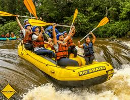
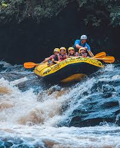
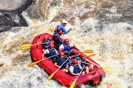

Canoon Trip Experiences
Rafting Juquitiba
Rafting in Juquitiba is for beginners, with easy and intermediate paths, is a great one day trip.
Rafting in Brotas
The rivers have easy, medium to difficult levels. A great place for families to enjoy adventure together.
Rafting in Socorro
If you are looking into having adrenaline experience Socorro's rivers are radical and the only place where there is height restriction, duo to the difficulty level.
